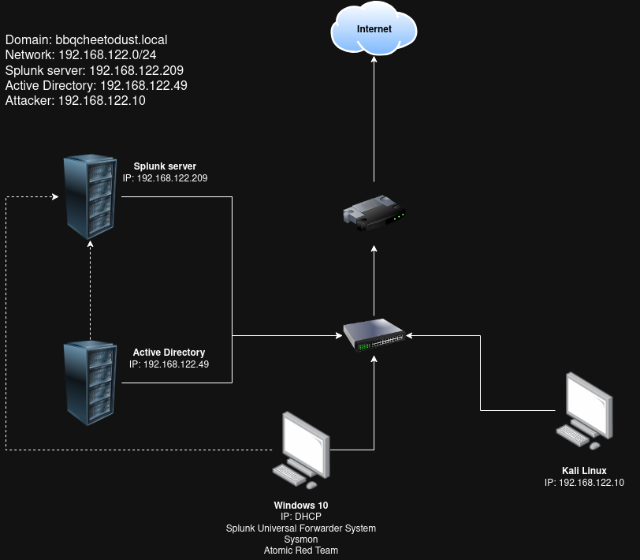
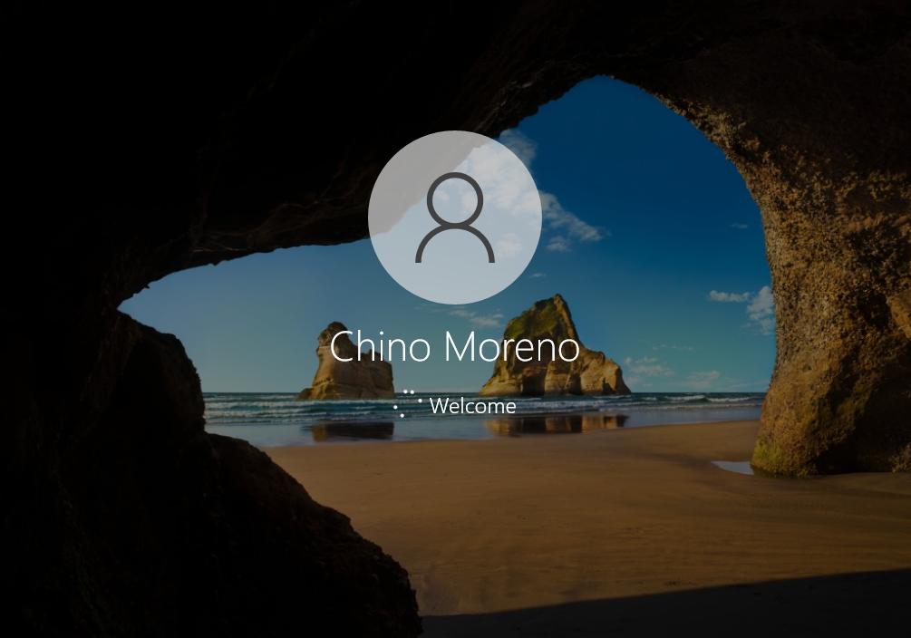

<< Back
Setting up Active Directory in a homelab
14 July 2025 - 30 July 2025
Contents
Downloading and installing all operating systems
Manually setting the IP address
Download free trial of Splunk Enterprise
Make a shared folder between Splunk server and host
Installing Splunk Universal Forwarder and sysmon
Downloading Splunk Universal Forwarder
Configuring Splunk Universal Forwarder by editing inputs.conf
Introduction
This post covers how to build up an environment with Active Directory in a homelab using Arch Linux as the host machine. I will confess immediately that much of these instructions are taken directly from MyDFIR's video series on creating an Active Directory homelab (link above); but there were at least a few outdated steps and differences with using Arch Linux (installing and generally dealing with VirtualBox, for example) that I thought were worth fixing in a single cohesive post.
This setup uses Active Directory and Sysmon installed across Windows 10 and Windows Server 2022 virtual machines (the former also serving as a target machine), the logs of which feed into Splunk hosted on an Ubuntu Server machine. There is also a Kali Linux machine serving as an attacker. All four VMs are hosted in VirtualBox and contained in the same NAT network. See network diagram below.
Network diagram

Components
- Windows 10 target machine with Splunk Universal Forwarder System installed, Sysmon, Atomic Red Team
- Kali Linux machine as an attacker machine
- Ubuntu Server as Splunk server
- Windows Server 2022 as Active Directory server
- All four machines will be hosted on Oracle Virtualbox
Now time to build up the environment.
Arch-specific considerations
sudo pacman -S virtualbox
when prompted to choose package to provide host modules, depending on kernel choose the respective package
- for linux kernel:
virtualbox-host-modules-arch - linux-lts:
virtualbox-host-modules-lts - for any other kernel, choose
virtualbox-host-dkms.
(this is taken directly from https://wiki.archlinux.org/title/VirtualBox)
another thing: run neofetch then modprobe vboxdrv, if the latter returns a fatal error check that the kernel is up to date and update/reinstall linux and linux-headers as necessary, then reboot
sudo pacman -S linux linux-headers
Downloading and installing all operating systems
We are creating each of the following VMs in Oracle VirtualBox.
FOR ALL MACHINES:
- Make sure unattended installation is UNCHECKED.
- Select the appropriate memory and disk space for each machine. My own settings are below; I could afford to be generous as my laptop has 40GB RAM and a 2TB SSD. At minimum set the RAM to 4GB and 20GB storage, 2-4 CPUs, and worst-case run each machine one at a time.
Windows 10 - straightforward, follow MyDFIR tutorial: https://www.youtube.com/watch?v=uXRxoPKX65Q
system config: 8192MB RAM, 4 processors, 100GB storage
Notes:
- when prompted choose Windows 10 Pro
- (same considerations and extra steps as when creating initial homelab)
Kali Linux - run graphical install and follow instructions
system config: 4096MB RAM, 2 processors, 25GB storage
Ubuntu Server (Splunk) - follow MyDFIR tutorial (mostly just keeping defaults and continually pressing Done or Continue)
system config: 16384MB RAM, 4 processors, 250GB storage
- For this tutorial, we will assume the username chosen is
bbqcheetodust
Windows Server 2022 - follow MyDFIR tutorial
system config: 8192MB RAM, 4 processors, 50GB storage
Notes:
- when prompted select Windows Server Standard Evaluation (Desktop Experience)
Configuring Splunk server
In VirtualBox > Tools > Network (or Ctrl+H within VirtualBox) (if you don't immediately see a Tools tab, check under File), go to the NAT Networks tab, then click Create.
At the bottom, editing General Options:
- name the network whatever you'd like, I called mine AD_PROJECT.
- set the IPv4 prefix to your network, in my case
192.168.122.0/24 - leave DHCP enabled
- click Apply
Now navigate to the Settings for each of the four VMs, then Network, and change Attached to: dropdown to NAT Network
make sure the right network (e.g. AD_PROJECT) is selected in the dropdown that appears underneath, then press OK button on the bottom right
Manually setting the IP address
Back in the Splunk server CLI, run ip a and note that the IP address printed is probably not what we want (192.168.122.209).
To set this statically, we'll be editing the file /etc/netplan/50-cloud-init.yaml. (once you type sudo nano /etc/netplan/ you can hit Tab to autofill as 50-cloud-init.yaml is the only file in that directory.)
By default 50-cloud-init.yaml should look something like this
network:
version: 2
ethernets:
enp0s3:
dhcp4: true
Make the following additions:
network:
version: 2
ethernets:
enp0s3:
dhcp4: no /* CHANGE "true" to "no" */\
/* new line then tab THREE times */
addresses: [192.168.122.209/24] /* IPv4 prefix in square brackets */
/* new line then tab THREE times */
nameservers: /* for DNS */
/* new line then tab FIVE times */
addresses: [8.8.8.8] /* Google's server */
/* new line then tab THREE times */
routes:
/* new line then tab FIVE times */
- to: default
/* new line then tab SIX times */
via: 192.168.122.1 /* gateway, should be .1 of network */
The end result should look like this:
network:
version: 2
ethernets:
enp0s3:
dhcp4: no
addresses: [192.168.122.209/24]
nameservers:
addresses: [8.8.8.8]
routes:
- to: default
via: 192.168.122.1
To save, hit Ctrl+X, then Ctrl+Y for Yes, and then Enter.
Then sudo netplan apply
Confirm new IP address has been applied wiith ip a
And confirm connectivity with ping google.com (Ctrl+C to stop after a few successful pings)
Download free trial of Splunk Enterprise
Create a Splunk account.
Then go to the Downloads page for Splunk Enterprise (https://www.splunk.com/en_us/download/splunk-enterprise.html?locale=en_us) and select Linux > the .deb file.
Make a shared folder between Splunk server and host
... so that we can actually download Splunk onto the Ubuntu Server guest.
(But honestly a faster way is to just copy (by hand) the wget command into the Ubuntu Server CLI)
Back in the Ubuntu Server CLI, run
sudo apt-get install virtualbox-guest-additions-iso virtualbox-guest-utils
Now on the VM window, on the top bar, click Devices > Shared Folders > Shared Folder Settings
Add a folder by clicking the icon on the top right of the Shared Folders section.
Within the Add Share popup that appears:
- Set the folder path to whichever folder the Splunk Enterprise
.debfile is in (preferably you create an entirely separate folder, I put mine in~/homelab/ad_project/). - The folder name can be whatever you want, I put
ad_project - Check Read-only, Auto-mount, and Make Machine-permanent . (You do not have to check Make Global)
Then press OK.
Back in the Splunk server CLI:
Run sudo adduser [USERNAME] vboxsf
in my case sudo adduser bbqcheetodust vboxsf
Now we will create a new directory share
mkdir share
ls to confirm share folder has been created
Then we can mount our actual shared folder to this new share folder.
sudo mount -t vboxsf -o uid=1000,gid=1000 [FOLDERNAME] share/
in my case sudo mount -t vboxsf -o uid=1000,gid=1000 ad_project share/
(If you get an error try exiting then logging back in.)
Now cd share/ && ls -la to confirm that you can see the .deb file.
Now to actually unpackage the Splunk installer:
sudo dpkg -i [FILENAME].deb
(You can probably just type out splunk and then tab to autocomplete the filename.)
Once this completes, cd /opt/splunk && ls -la
Notice that all files and folders and owned by splunk.
So we'll need to change over to this user to actually do anything in here.
sudo -u splunk bash
then cd bin and let's start the installer:
./splunk start
The license agreement will pop up, Hold Space until you reach the bottom then press y to agree to the license terms.
Choose an administrator username and password, and Splunk installation should complete.
To ensure Splunk runs on boot:
exit
cd bin
sudo ./splunk enable boot-start -user splunk
MAKE A SNAPSHOT OF THE SPLUNK SERVER VM RIGHT NOW (you can call it "splunk installed")
Installing Splunk Universal Forwarder and sysmon
... on both our target machine and the Splunk server.
Target machine (Windows 10)
Log in to the Windows 10 machine, and then in the Search bar search for About your PC.
Open that window and click Rename this PC.
Rename it to target-PC
You will be made to restart the VM.
Once VM restarts, go to the same About your PC window and confirm that the Device name has been changed accordingly.
Now open a Command Prompt terminal (search cmd) and run ipconfig
Note the IPv4 address. If you're okay with this DHCP-assigned address, skip to Downloading Splunk Universal Forwarder.
If the address CONFLICTS with another address that you've preset in the network diagram:
- Go to Settings > Network & Internet > Status > (scroll down) Change adapter options
- New "Network connections" window will open, right-click the Ethernet adapter, then click Properties
- Under "This connection uses the following items:" find and click to highlight Internet Protocol Version 4 (TCP/IPv4), then click the Properties button on the bottom right of that box.
- Select "Use the following IP address" and set the IP address, subnet mask and default gateway
- Under "Use the following DNS server addresses", set the preferred DNS server as
8.8.8.8 - Then hit OK. Then on the previous window, Close.
- Back in Command Prompt, if we run
ipconfigagain you should notice the address is now changed.
Now, opening a browser window, we should be able to go to [SPLUNK_SERVER_IP]:8000 and see a login screen for Splunk Enterprise.
Downloading Splunk Universal Forwarder
In the same Windows 10 VM, open another browser tab and go to splunk.com.
Log in to your Splunk account
Then go to Security > Free Trials & Downloads
Scroll down to Universal Forwarder and click Get My Free Download
Select Windows and choose the 64-bit installer
A .msi file should download
Open the installer.
- Check the box to accept the License Agreement
- Check An on-premises Splunk Enterprises instance
- Hit Next
- Set the username as
adminand leave Generate random password checked - Skip the Deployment Server screen by hitting Next
- For the Receiving Indexer screen, put in the IP of the Splunk server (in my case
192.168.122.209) - For the port, enter the default
9997 - Hit Install to start the installation
- Click Yes when prompted
- Once the install finishes, click Finish\
Downloading sysmon
Going back to the same browser (within the Windows 10 VM), open a new tab
Google sysmon and click the first link (should be a learn.microsoft.com url)
https://learn.microsoft.com/en-us/sysinternals/downloads/sysmon
On that webpage, click the Download sysmon link, and a .zip file should install
To download the sysmon config we'll be using, go to https://github.com/olafhartong/sysmon-modular (or google sysmon olaf config)
Scroll until you see the sysmonconfig.xml, and open that file.
Then click Raw
On the page that appears, right-click anywhere and click Save As, and save it to your Downloads folder
Now open your Downloads folder in File Explorer
Right click on the sysmon .zip file and select Extract All
Now open PowerShell as root
(search powershell, then in the menu that appears, select Run as administrator. If prompted, click Yes)
In the terminal run cd C:\Users\[USERNAME]\Downloads\Sysmon
(In my case my chosen username when I configured this Win10 VM is target)
Then .\Sysmon64.exe -i ..\sysmonconfig.xml
In the window that appears, click Agree
Once this completes, close out of the PowerShell window
Configuring Splunk Universal Forwarder by editing inputs.conf
In this section we are setting the instructions for the Splunk Universal Forwarder on what it should send to the Splunk server.
We can find inputs.conf in
C:\Program Files\SplunkUniversalForwarder\etc\system\default
IMPORTANT: WE ARE NOT EDITING THIS EXACT FILE!!!!!!
Instead we will go to the directory
C:\Program Files\SplunkUniversalForwarder\etc\system\local and create a NEW FILE called inputs.conf in that directory.
To do so, open Notepad as an administrator and type in the following:
(You can also copy and paste this from https://github.com/MyDFIR/Active-Directory-Project .)
[WinEventLog://Application]
index = endpoint
disabled = false
[WinEventLog://Security]
index = endpoint
disabled = false
[WinEventLog://System]
index = endpoint
disabled = false
[WinEventLog://Microsoft-Windows-Sysmon/Operational]
index = endpoint
disabled = false
renderXml = true
source = XmlWinEventLog:Microsoft-Windows-Sysmon/Operational
Now save this as inputs.conf in C:\Program Files\SplunkUniversalForwarder\etc\system\local. Be sure to Save as type: All Files.
Notice that we now have an inputs.conf file in that directory.
Anytime this file is updated we must restart the Splunk Universal Forwarder service.
To do so, search for Services and run as administrator.
In the list that appears, look for SplunkForwarder.
If you see that in that row, the Log On As column reads NTSERVICE, we should change that as that configuration does not give all the necessary permissions for Splunk to ingest logs properly.
Double-click the row and go to the Log On tab, and select Log on as: Local System account.
Click Apply. You should get a warning that "The new logon name will not take effect until you stop and restart the service." This is exactly what we will do, hit OK to close the warning.
Confirm that in the row from earlier, the Log On As column has been updated.
Right click the row and hit Restart.
If you get an error that Windows was unable to start the service, simply hit OK, and on the left column click Start the service.
Once the SplunkForwarder service is running again, go back to the very first tab where you have Splunk Enterprise [SPLUNK_SERVER_IP]:8000 open. Login if you haven't already (make sure your Splunk server VM is also up and running still).
Once logged in, go to Settings > Indexes.
Recall from earlier that we are sending all of these logs to an index called endpoint. This screen is where we will be creating that index.
Notice no such endpoint index already exists in the list shown.
On the top right click New Index.
Set Index Name as endpoint, leave all else as is and hit Save.
Scroll down to check that the endpoint index has been created.
Now to confirm that the Splunk server has been properly configured to receive data, go to Settings > Forwarding and receiving.
Then click on Configure receiving.
On the top right click New Receiving Port.
Set Listen on this port to 9997. Then hit Save.
Now go to Apps > Search and Reporting.
Skip the tour.
Do a search for index=endpoint (the default time range of Last 24 hours is fine).
Windows Server
Now let's open the Windows Server 2022 VM.
Similarly, we'll rename this machine to win-server (search About your PC) and allow it to restart to apply that change.
(Unlike the Windows 10 VM, a window will appear before you restart, prompting you to "Choose a reason that best describes why you want to shut down this computer." Leave it as Other (Unplanned) and press Continue.)
Follow the same instructions as the Windows 10 VM for confirming the machine's IP address (and changing it as needed), as well as downloading Splunk Universal Forwarder, sysmon, and the sysmon config.
To run apps as administrator (e.g. PowerShell for the sysmon commands and the Notepad app to make the new inputs.conf file) you will need to search for the app and then right-click to run as administrator.
Note that once you've completed all the steps of installing Splunk Universal Forwarder and sysmon you do not need to redo any of the configurations within the Splunk interface itself (creating the endpoint index and setting the receiving port), as those have already been completed and we are simply accessing the same server.
As a final confirmation run the following search on Splunk:
index=endpoint
| stats count by host
You should see two rows: target-PC and win-server.
Install and configure Active Directory
Windows Server
In the Windows Server VM, open Server Manager, then go to Manage > Add Roles and Features.
The Add Roles and Features Wizard will appear.
Before You Begin screen: Next
Installation Type: Role-based or feature-based installation
Server Selection: If there were multiple servers, this is where they would be listed, but since we only have one, we can skip this. Next
Server Roles: Select Active Directory Domain Services. A window will pop up that reads: "Add features that are required for Active Directory Domain Services"? Leave everything as is and just click Add Features.
Keep clicking Next until the Install button becomes available.
Click the Install button.
Installation will take a couple minutes.
Once the status below the progress bar reads "Configuration required. Installation succeeded on win-server", close out of the Add Roies and Features Wizard.
You'll notice the flag icon on the top right has a warning sign next to it.
Click the flag icon, then click Promote this server to a domain controller.
The Active Directory Domain Services Configuration Wizard should appear.
Deployment Configuration: Add a new forest. Root domain name: any top level domain of your choice should work, e.g. bbqcheetodust.local or bbqcheetodust.test. But it cannot be simply, for example, bbqcheetodust.
Domain Controller Options: Leave all defaults as is, and enter a password where prompted.
DNS Options, Additional Options, Paths, Review Options: Next.
(Note that the path in the Paths tab contains the ntds.dit file. Any unauthorized activity in this directory effectively means the entire domain is compromised.)
At Prerequisites Check, once the check passes, click Install.
The machine will restart after installation is complete; when the "You're about to be signed out" prompt appears, click Close and wait for the machine to restart.
Once you arrive back at the login screen, we should see the user has changed to, e.g. in my case, BBQCHEETODUST\Administrator. This confirms that we have promoted the server to a domain controller.
Adding users
Log in again and open Server Manager (usually Server Manager auto-opens on boot).
Then go to Tools > Active Directory Users and Computers.
Expand the domain on the left sidebar (bbqcheetodust.local) and click Builtin.
To simulate a corporate environment, let's create a new organizational unit called "IT".
Right click the domain name, then New > Organizational Unit.
Name: IT
Then hit OK.
Now in this IT unit, right-click anywhere in the window, then click New > User.
For fun, I'll be adding users for the four current active members of the band Deftones:
- Stephen Carpenter: username
scarpenter, passwordExtremelySecure#- when prompted, UNCHECK "User must change password at next login"
- Abe Cunningham: username
acunningham, passwordSecure### - Chino Moreno: username
cmoreno, passwordSecure### - Frank Delgado: username
fdelgado, passwordSecure###
Actually, let's to create another organizational unit called "HR".
Now we'll move Chino Moreno and Frank Delgado to HR by right-clicking on each of them, then hitting Move, then HR, then OK.
The result should be that Stephen Carpenter and Abe Cunningham are in IT, while Chino Moreno and Frank Delgado are in HR.
Join target_PC to the bbqcheetodust.local domain
Back on the Windows 10 machine, search again for About your PC then scroll down to Advanced system settings (under Related settings).
In the window that appears, switch to the Computer Name tab, then click Change.
Leave Computer Name as is, but switch to Member of Domain, and enter the TLD you chose earlier (bbqcheetodust.local).
You will get an error that reads:
An Active Directory Domain Controller (AD DC) for the domain 'jontwentyfive.local' could not be contacted.
Ensure that the domain name is typed correctly.
If the name is correct, click 'Details' for troubleshooting information.
This is expected, as the Windows 10 machine does not know how to resolve bbqcheetodust.local.
To give instructions on how to do so, right-click the network icon (probably an ethernet icon on the bottom right) and then Open Network & Internet settings.
The next few steps should be familiar: Change adapter options > Ethernet (right click and click Properties) > Internet Protocol Version 4 (TCP/IPv4).
Under "Use the following DNS server addresses:" set the Preferred DNS server as the IP of the domain controller, i.e. the Windows Server machine. In my case this would be 192.168.122.49. (You do not need to enter an alternate.) Hit OK.
To confirm the change open Command Prompt and run ipconfig /all.
The DNS Servers line should read 192.168.122.49.
Now going back to the Computer Name/Domain Changes screen from earlier, close out the error by hitting OK, then hit OK again to retry. (You should make sure your Windows Server VM is still on and running.)
When prompted to enter a username and password, enter administrator as the username and the password for the Windows Server machine as the password.
You should get a message that reads, "Welcome to the bbqcheetodust.local domain".
...followed by, "You must restart your computer to apply these changes."
Hit OK, then close out of the Computer Name/Domain Changes screen.
Another window will appear asking if you want to restart now or later.
Click Restart Now.
When we reach the login screen again, we'll switch to Other user in the bottom left and then type in the username and password of one of the users you created.
As you do so, notice it should say Sign in to: BBQCHEETODUST on the bottom. This should confirm that the Windows 10 machine is now joined to the domain.
For example, I will now be logging in as Chino Moreno.
